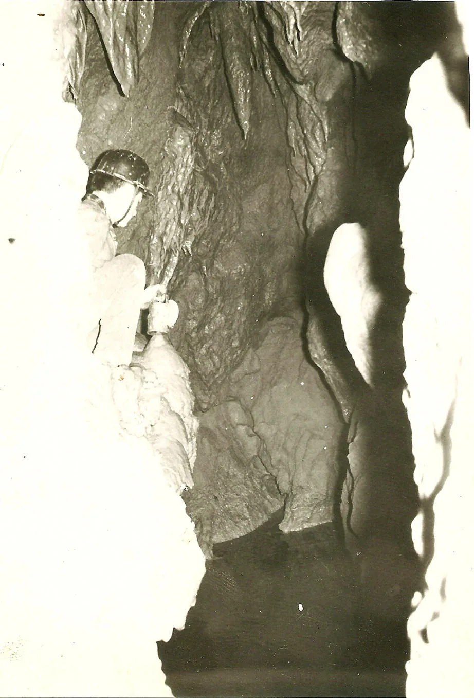

1959. Prvo ronjenje u špilji u Hrvatskoj
Napisao: Hrvoje Malinar “Joe” Razni motivi mogu ponukati čovjeka na neki neobičan pothvat. Tako je bilo i s mojim ronjenjem sifona u špilji Veternici kod Zagreba. Do te davne 1959. godine još se nitko u Hrvatskoj nije…

Napisao: Hrvoje Malinar “Joe”
Razni motivi mogu ponukati čovjeka na neki neobičan pothvat. Tako je bilo i s mojim ronjenjem sifona u špilji Veternici kod Zagreba. Do te davne 1959. godine još se nitko u Hrvatskoj nije odlučio zaroniti u hladne vode nekog špiljskog sifona.
Gledao sam te godine neki bedasti ratni film, mislim da se zvao Posljednji izlaz, a bio je u produkciji Zastava filma. U tom je filmu prikazano kako su partizanski diverzanti uništili njemačko skladište benzina u znamenitoj Postojnskoj špilji. To što su tada počinili ekocid i zauvijek zacrnili sigaste tvorevine u toj prekrasnoj špilji, druga je priča. Ono što se u filmu događalo nakon aktiviranja ručnih granata koje su zapalile skladište s benzinom, bilo je naivno izvedeno. Naime, njemački su vojnici zapriječili diverzantima normalni izlaz iz špilje i partizani se odlučuju na jedini izlaz: ronjenjem kroz sifon rijeke ponornice Pivke, koja protječe dijelom špilje. Jednostavno zaranjaju na dah bez rasvjete i opreme za ronjenje pa što bude da bude. I oni .. buć u mračnu hladnu vodu i nekim čudom izlaze u svijetlu budućnost, na slobodu.
Događaj je djelomično istinit, ali partizani su ušli u špilju i izašli iz nje kroz drugi ulaz. Dakle naziv filma Jedini izlaz je fikcija jer je postojao drugi izlaz bez ronjenja.
Već mi je tada bilo jasno da ronjenje u špilji nije tako jednostavno i da je radnja u filmu više nego naivna. Ali ipak sam mislio:
– ”Nisam ja ni bedastiji ni nesposobniji od njih. Nabavit ću opremu za ronjenje i pokušat preroniti nizvodni sifon u špilji Veternici. Možda otkrijem nove, još neviđene špiljske kanale”.
Početkom lipnja 1959. izvršio sam pokusno ronjenje sifona Veternice. Cilj ovog ronjenja bio je da se ustanovi vodi li iz sifonskog jezera dovoljno široki kanal za daljnji prolaz, u kojem smjeru se sifon nastavlja i ide li u dubinu ili je možda plitak pa se može jednostavno preroniti na dah. Naravno da tada još nisam imao ronilačko odijelo, ta tko ga je uopće imao u Hrvatskoj? Već ranije sam čuo da se tijelo može donekle zaštititi od hladne vode ako se premaže s masnoćom, pa sam tako i ja učinio. Namazao sam se svinjskom mašću. Sva moja ronilačka oprema sastojala se od kupaćih gačica, maske za ronjenje i dugoljaste baterijske svjetiljke koju sam uvukao u zračnicu od bicikla da u nju ne uđe voda.
Tako opremljen ušao sam u hladnu i mutnu vodu sifonskog jezera. Prijatelji su me osiguravali užetom. Oprezno gazeći po muljevitom dnu jezera, u kojem mi je voda dosezala samo nešto više od pojasa, rukama sam pipao po stijenama tražeći mjesto gdje voda odlazi. Suprotno od smjera dotjecanja potoka, gdje sam očekivao podvodni nastavak kanala, stijena je sezala do dna. Tek na lijevom boku otkrio sam otvor strmog odvodnog kanala. Bio je uzak pa sam pokusno zaronio na dah s nogama naprijed. Nadao sam se da će sifon biti plitak i da ću kratkim zaronom dospjeti na drugu stranu. No kanal je vodio u dubinu. Sifon se nije mogao svladati ronjenjem na dah. U tu podvodnu jamu moglo se zaroniti samo s pravom ronilačkom opremom.
Gdje nabaviti ronilački aparat? U ono vrijeme to nije bilo tako jednostavno kao danas. Slučaj je htio da je naš prijatelj Popaj iz speleološkog odsjeka planinarskog društva ”Javor” iz Zagreba nekako u to vrijeme zamolio direktora Vatrogasne škole u Zagrebu da minira jedan oveći kameni blok koji je ometao inače dobru prohodnost u prvom dijelu špilje Veternice. Taj, tri metra visoki blok, koji je davno otpao sa stropa, bio je naslonjen na Kameni slap i suprotnu stijenu. Trebalo je spretnosti da se popne preko njega ako se htjelo dalje nastaviti Glavnim kanalom. Popaj je tada bio zaposlenik u laboratoriju Vatrogasne škole a njegov direktor, koji je imao položen minerski ispit, pristao je na taj pothvat i miniranjem je razbio kameni blok. Kasnije je trebalo to kamenje batom razbiti u manje dijelove i ukloniti, i tako je prolaz pokraj Kamenog slapa za svagda omogućen bez zanovijetnog pentranja.
Pri miniranju tog kamena i odnošenju kršja sudjelovali smo uz ostale špiljare moj prijatelj Jambrek i ja. Nešto smo raspravljali o ronjenju sifona i to je čuo Weingärtner, direktor Vatrogasne škole.
– Ako želite preroniti taj sifon, mogu vam posuditi ronilački aqualung aparat marke ”Dräger”. Imamo ga u školi!
Bio sam oduševljen tom mogućnošću. Dogovor je pao. Sutradan, u ponedjeljak, došao sam u Vatrogasnu školu, potpisao revers i preuzeo na moju neizmjernu radost, ronilački aparat dvobocnik napunjen zrakom pod tlakom od 160 atmosfera. Nosio sam ga ponosito doma kao najveće blago. Proučio sam njegove dijelove i način kako ga mogu rastaviti radi lakšeg transporta u špilji. Bio je to za današnje pojmove zastario ronilački aparat prilično različite konstrukcije od sadašnjih. Imao je tzv. plućni automat sa samo jednim stupnjem redukcije tlaka i rebrastim cijevima za zrak. Cijeli tjedan razmišljao sam samo o ronjenju u Veternici. Bio sam svjestan da ronjenje predstavlja priličnu opasnost. Stvar je tim gora što tada nisam nigdje mogao nabaviti ronilačko odijelo koje bi me zaštitilo od hladne špiljske vode. Već sam ranije dosta čitao o ronjenju i opremi pa sam teoretski bio dosta potkovan u tome. Ali nikad prije planiranog ronjenja sifona nisam ronio s ronilačkim aparatom u moru, pa čak ni u bazenu! A u Hrvatskoj prije mene nitko nije ronio u špiljama.
Došao je i naredni vikend. Prespavali smo sa subote na nedjelju u planinarskom domu na Glavici. Sutradan, 21. lipnja 1959., uslijedio je transport opreme kroz špilju prema sifonu. U akciji su sudjelovali braća Ivan i Petar Filipčić, Ivan Kruhak, Drago Matišić, Drago Horvat-Jambrek i Tomislav Imenšek-Popaj. Najviše me je bilo strah da pri spuštanju opreme niza slapove ne padne koja boca i ne izazove puknuće i eksploziju.
Putem smo proširivali suženja kako bi se transport opreme lakše odvijao. Ulaz u Tobogan koji vodi desno iz Pakla dalje u unutršnjost špilje do tada je bio vrlo tijesan. Odvalili smo s ulaza u kanal kamene blokove. Time je bio omogućen mnogo lakši prolaz nego onim niskim i teže prohodnim kanalom koji vodi iz Pakla prema Bubregu. Na isti smo način proširili jedva prohodna suženja ispod Mlina, gdje se dolazi na potok i to na prolazu u nizvodni krak Glavnog kanala. Spuštanje niz trinaestmetarski i osammetarski slap prošlo je bez teškoća.
Stigli smo do sifonskog jezera. U ekipi je vladalo uzbuđenje. Nikom nije bilo svejedno kako će završiti taj pothvat, ponajmanje meni. Skinuo sam obuću i odjeću i navukao samo majicu s dugim rukavima i duge flanelske gaće. To bijelo rublje sam prethodno obojio bojom za tekstil u jarko crvenu boju. Činilo mi se da je time moja ronilačka odjeća postala ljepša, ali je jednako slabo štitila od hladne vode. Obuo sam neke stare gradske cipele, jer peraje ovdje očito ne bi bile od koristi. Na glavu sam navukao gumenu kapu za kupanje i preko nje kožnatu kacigu. Kapa me trebala donekle štititi od hladnoće a kaciga od udaraca u oštre stijene pod vodom. Oko pojasa sam zavezao uže koje će moji dečki pridržavati na površini. Stavio sam aparat na leđa, navukao masku i u ruku uzeo onu moju baterijsku svjetiljku u zračnici od bicikla. Još sam jednom provjerio na manometru tlak u bocama.
– U redu. Idem dolje! – promumljam, stavim usnik aparata u usta i započnem zaron.
Voda je mutna jer je to odvodni sifon, pa smo već kod priprema donekle zamutili vodu. A i moje gackanje kroz mulj do sifonske jame je dodatno smanjio vidljivost. Uvlačim se kroz uski otvor s nogama naprijed. Dečki polagano popuštaju uže i ja idem sve dublje. Hladnoća je velika. Nožni i ručni mišići mi začas trnu. Dobro je da na glavi imam gumenu kapu jer je kroz glavu najveća odvodnja topline. Ubrzo nailazim na manju policu, prolazim je i jama se još nastavlja u dubinu. Rukama se povlačim držeći se za izbočine još koji metar. I tu je na moju žalost kraj ronjenja jer se prolaz naglo sužava. Sjedim na muljevitom dnu, ili možda kakvoj međupolici? Vidim da s aparatom na leđima neću moći dalje. Ne znam, možda bih trebao skinuti aparat s leđa i povlačiti ga za sobom? Čini mi se to onako neizvježbanom preriskantno.
Nemam vremena puno razmišljati jer je nepodnošljivo hladno. Istim putem vraćam se prema površini. Svaki čas udarim kacigom po stropu. Dobro da je imam na glavi! I koji trenutak kasnije već stojim u sifonskom jezeru, a dečki mi pomažu da skinem težak aparat.
(Tekst je objavljen u Velebitenu br.48 i knjizi „Planine u srcu, srce u planinama“ – zbirka novela i humoreski na temu speleologije i planinarstva.)
Veternica – skica profila sifonskog jezera (iz Vjesnika od 4. i 5. srpnja 1959.)
Čujem jaki pisak, ali mi nije jasno odakle taj šum. Skidam gumenu kapu i kacigu. Šum se umnogostručio. Dečki zatvaraju ventile na bocama, a ja još zadihan polako dolazim u normalu. Koliko god bio špiljski zrak hladan, on ne odvodi toplinu kao voda i imam osjećaj da mi je znatno toplije. Filac mi kaže da su napravili čvor na užetu kad su osjetili moj signal s dva potezanja užeta, koji je značio vu-ci. Od površine do mojeg pojasa izmjerena je dužina od osam metara. Vjerojatno je onda dubina još nešto manja jer sifonski kanal nije posve vertikalan. Oblačeći se, ukratko ispričam kakva je situacija pod vodom. Nije preronjen sifon, niti je zaronom postignuta neka impozantna dubina. Svejedno, prijatelji mi srdačno čestitaju, sretni da sam se živ i zdrav vratio iz opasne mutne vode.
Tek doma sam ustanovio da su brtve na spoju boca i armature s ‘plućnim automatom’ od starosti i u dodiru s vodom popucale. Ono jako šištanje nastajalo je od ‘bježanja’ zraka iz boca kroz pukotine na brtvama. Kontrolom manometra ustanovio sam da je u bocama ostalo još samo malo zraka. Toliki zrak očito nisam mogao potrošiti za tako kratko vrijeme zarona ma da ne znam koliko sam brzo zbog hladnoće i uzbuđenja udisao. Da me ono suženje nije zaustavilo, ja bih u nastavku ronjenja ostao bez zraka, a priču o ovom pothvatu napisao bi netko drugi.
***
Nisam postigao željeni rezultat ovim ronjenjem. Gledano s današnjeg stajališta, da sam i uspio preroniti sifon bila bi to tek sitnica prema aktualnim dostignućima. Suvremena oprema omogućuje novim generacijama dobro obučenih speleoronioca fantastične rezultate pa je ovo samo priča o prvom ronilačkom iskustvu u nekoj špilji u Hrvatskoj.
(Objavljeno u Velebitenu br.48 i u knjizi Planine u srcu, srce u planinama – zbirka novela i humoreski na temu speleologije i planinarstva (H. Malinar)